한국사능력검정시험-심화 (2011-08-13 기출문제)
1. 다음 유물이 처음 사용된 시기의 생활상으로 옳은 것은? [1점]
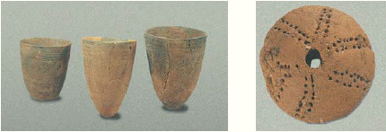
- 밭에서 조, 피 등을 재배하였다.
- 천군이 제천 의례를 주관하였다.
- 사람이 죽으면 독에 넣어 매장하였다.
- 목책과 환호를 설치하고 구릉 위에 취락을 이루었다.
- 호랑이 모양과 말 모양의 띠고리 장식을 사용하였다.
(정답률: 80%)

2. (가) 나라에 대한 설명으로 옳은 것은? [2점]
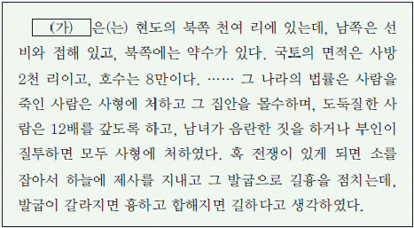
- 가(加)들이 저마다 사출도를 다스렸다.
- 목지국의 지배자를 진왕으로 추대하였다.
- 고구려에 소금, 어물 등을 공물로 바쳤다.
- 사자, 조의, 선인 등의 관직을 설치하였다.
- 책화를 통해 부족 간의 경계를 분명히 하였다.
(정답률: 73%)
3. 지도에서 붉게 표시된 지역에 있는 문화유산으로 옳은 것은? [2점]
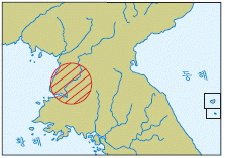
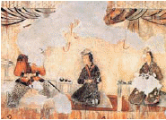
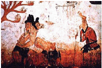
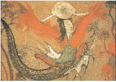
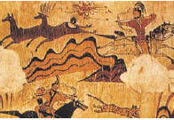
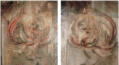
(정답률: 27%)
4. 다음 유물이 발견된 무덤에 대한 설명으로 옳은 것은? [2점]
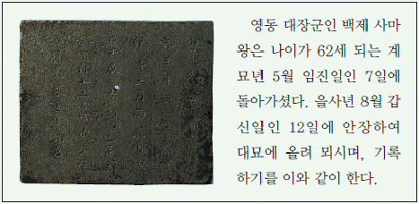
- 널방을 벽돌로 쌓았다.
- 모줄임 천장 구조로 되어 있다.
- 봉토 주위에 12지 신상을 둘렀다.
- 고구려의 초기 무덤 양식을 계승하였다.
- 나무덧널 위에 냇돌을 쌓은 후 흙으로 덮었다.
(정답률: 48%)
5. 다음 초대장의 (가)에 들어갈 사진 자료로 적절하지 않은 것은? [2점]
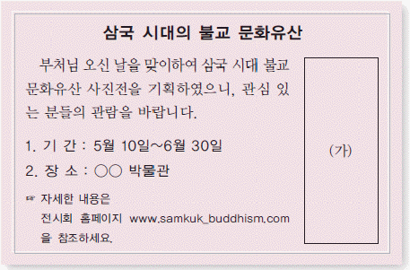
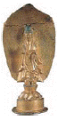
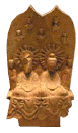
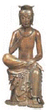
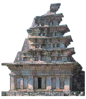
(정답률: 57%)
6. (가), (나)에 대한 설명으로 옳은 것은? [3점]
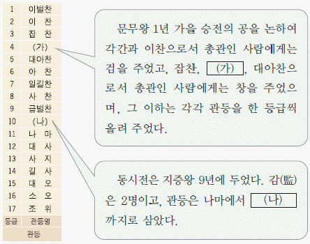
- (가) 관등의 관리는 청색의 관복을 입었다.
- (가) 관등은 집사부의 중시직에 오를 수 있었다.
- (나) 관등은 6두품의 승진 상한선이었다.
- (나) 관등은 5소경의 장관직에 오를 수 있었다.
- (가), (나) 관등은 중위제의 대상이 되었다.
(정답률: 36%)
7. 다음 인물에 대한 설명으로 옳은 것은? [1점]
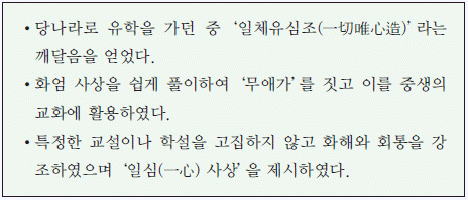
- 정혜쌍수를 바탕으로 철저한 수행을 강조하였다.
- 아미타 신앙을 전파하며 불교의 대중화에 기여하였다.
- 인도와 주변 국가를 순례한 후「왕오천축국전」을 저술하였다.
- 이론의 연마와 실천을 아울러 강조하는 교관겸수를 제창하였다.
- 화엄일승법계도를 지어 모든 존재의 상호 의존적인 관계를 설명하였다.
(정답률: 61%)
8. 교사의 질문에 대한 학생의 대답으로 적절하지 않은 것은? [2점]
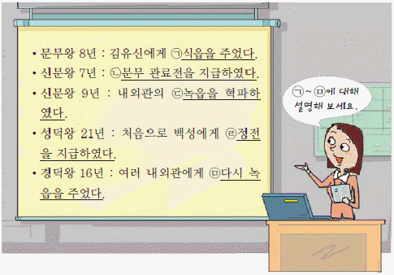
- 갑 : (ㄱ)은 조세 징수권과 노동력 징발권을 준 것이에요.
- 을 : (ㄴ)을 통해 국왕의 권한 강화를 뒷받침하였어요.
- 병 : (ㄷ)은 귀족의 지배력이 강화되는 계기가 되었어요.
- 정 : (ㄹ)의 목적은 왕권 강화와 농민 경제 안정이었어요.
- 무 : (ㅁ)에서 왕권이 약화되는 모습을 찾아볼 수 있어요.
(정답률: 79%)
9. 다음 칙령에 대한 설명으로 옳지 않은 것은? [3점]
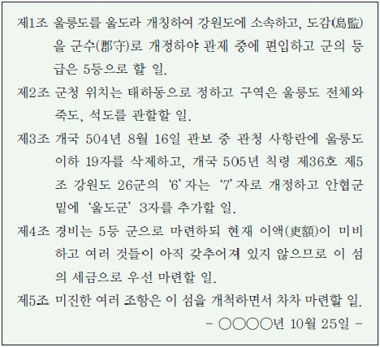
- 관보에 게재되어 국내외에 공포되었다.
- 독도를 울릉도의 관할 구역으로 명기하였다.
- 독도가 우리나라 영토임을 입증하는 국제법상 근거가 된다.
- 제정된 날을 기념하여 울릉군 조례로‘독도의 날’이 지정 되었다.
- 일본이 독도를 시마네 현에 편입한 조치를 반박하기 위해 발표되었다.
(정답률: 49%)
10. 밑줄 그은‘북국’의 경제생활에 대한 설명으로 옳은 것을 <보기>에서 고른 것은? [1점]
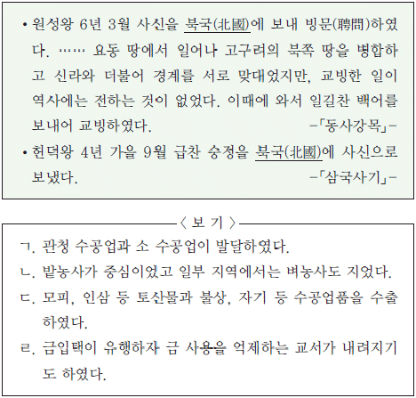
- ㄱ, ㄴ
- ㄱ, ㄷ
- ㄴ, ㄷ
- ㄴ, ㄹ
- ㄷ, ㄹ
(정답률: 40%)
11. (가) ~ (다) 문화유산에 대한 설명으로 옳은 것은? [2점]
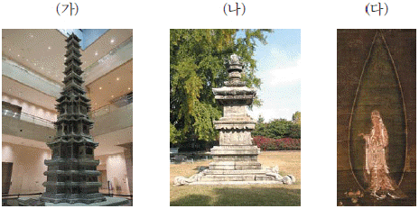
- (가)는 통일 신라 석탑 양식을 계승하였다.
- (나)는 원나라 조형 예술의 영향을 받았다.
- (다)는 경전 이해를 위해 불경 맨 앞장에 그려졌다.
- (가), (나)는 부처의 사리를 모시기 위해 제작되었다.
- (가), (다)는 권문세족 집권기에 만들어졌다.
(정답률: 37%)
12. 밑줄 그은 내용과 유사한 기능을 했던 기구로 옳은 것을 <보기>에서 고른 것은? [2점]
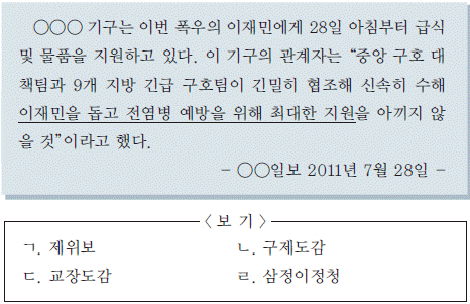
- ㄱ, ㄴ
- ㄱ, ㄷ
- ㄴ, ㄷ
- ㄴ, ㄹ
- ㄷ, ㄹ
(정답률: 61%)
13. 밑줄 그은 (ㄱ)`~`(ㅁ)과 관련한 동이의 활동으로 옳지 않은 것은? [2점]
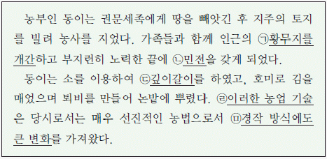
- (ㄱ) - 일정 기간 세금을 면제받았다.
- (ㄴ) - 생산량의 10분의 1을 조세로 납부하였다.
- (ㄷ) - 지력을 빨리 회복시켜 수확량을 증가시켰다.
- (ㄹ) - 「농사직설」을 통해 익혔다.
- (ㅁ) - 밭에서 2년 3작의 윤작을 하였다.
(정답률: 56%)
14. 도표는 어느 시기 호적들의 일부를 정리한 것이다. 이 시기 사회 모습에 대한 대화로 옳지 않은 것은? [3점]
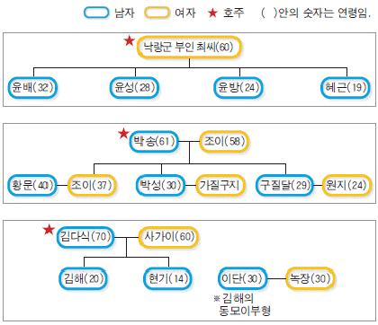
- 갑 : 여성의 재가가 가능하였어.
- 을 : 부모의 유산이 자녀에게 골고루 분배되었어.
- 병 : 자녀들은 태어난 순서대로 호적에 기재하였어.
- 정 : 아들이 없는 집에서는 양자를 들이는 것이 일반적이었어.
- 무 : 제사는 형제가 돌아가면서 지내거나 책임을 분담하였어.
(정답률: 71%)
15. 밑줄 그은‘중성’이 건립되던 시기의 역사적 사실에 대한 탐구 활동으로 가장 적절한 것은? [2점]
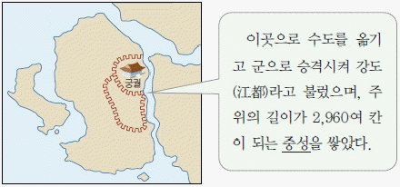
- 별무반의 편성 과정을 이해한다.
- 대화궁을 설립한 이유를 파악한다.
- 정동행성이 설치된 목적을 연구한다.
- 시헌력을 사용하게 된 이유를 알아본다.
- 재조대장경이 만들어진 과정을 조사한다.
(정답률: 42%)
16. 밑줄 그은 (ㄱ)~(ㅁ)에 대한 설명으로 옳지 않은 것은? [1점]
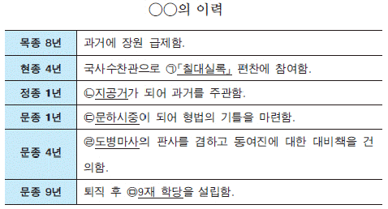
- (ㄱ) - 외적의 침입으로 불타버리고 인쇄본 일부가 남아있다.
- (ㄴ) - 급제자와 함께 좌주-문생의 관계를 형성하였다.
- (ㄷ) - 중서문하성의 장관으로 국정을 총괄하였다.
- (ㄹ) - 재신과 추밀이 모여 국가의 중요한 일을 결정하였다.
- (ㅁ) - 9경(經)과 3사(史)를 가르쳤다.
(정답률: 32%)
17. (가), (나) 사건 사이에 일어난 역사적 사실로 옳은 것을 <보기>에서 고른 것은? [3점]
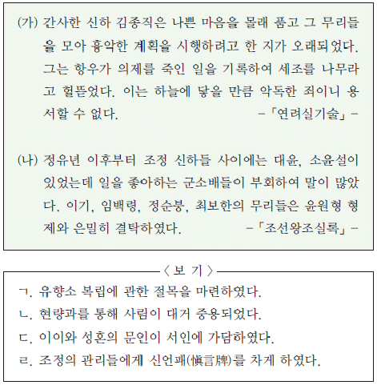
- ㄱ, ㄴ
- ㄱ, ㄷ
- ㄴ, ㄷ
- ㄴ, ㄹ
- ㄷ, ㄹ
(정답률: 28%)
18. (가), (나)에 대한 설명으로 옳은 것을 <보기>에서 모두 고른 것은? [2점]
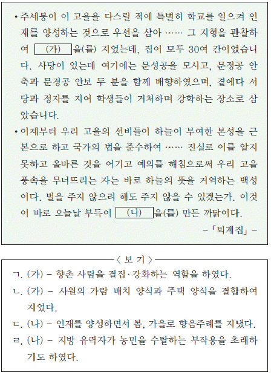
- ㄱ, ㄴ
- ㄱ, ㄷ
- ㄷ, ㄹ
- ㄱ, ㄴ, ㄹ
- ㄴ, ㄷ, ㄹ
(정답률: 47%)
19. (가)의 업적으로 옳은 것은? [2점]
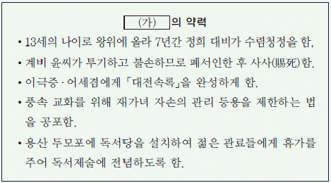
- 진관 체제를 처음으로 실시하였다.
- 사병을 없애고 친위 군사를 늘렸다.
- 규장각을 정책 연구 기관으로 육성하였다.
- 편년체 역사서인「동국통감」을 편찬하였다.
- 경기도에서 시험적으로 대동법을 실시하였다.
(정답률: 30%)
20. 다음은 어느 그림의 제화시(題畵詩)이다. 이 그림으로 옳은 것은? [3점]
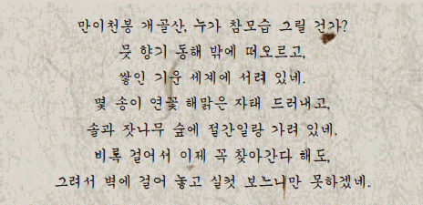
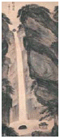
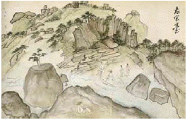
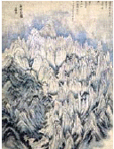
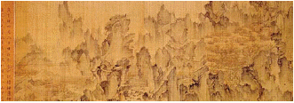
(정답률: 30%)
21. 다음 자료의 사건이 일어난 시기의 상황으로 옳은 것은? [1점]
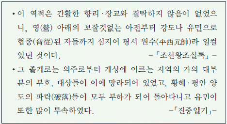
- 시파와 벽파의 대립이 시작되었다.
- 사림이 훈구 세력의 공격을 받았다.
- 남인과 서인이 예송 논쟁을 벌였다.
- 왕이 직접 나서서 환국을 주도하였다.
- 소수의 유력 가문이 정치 주도권을 장악하였다.
(정답률: 63%)
22. (가)∼(마)와 관련된 설명으로 옳지 않은 것은? [2점]
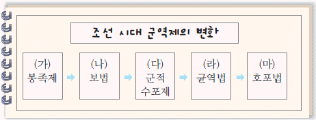
- (가) - 양인 장정은 정군이나 봉족이 되었다.
- (나) - 정군의 수가 줄어들어 군사력이 약화되었다.
- (다) - 불법적인 대립으로 인하여 시행되었다.
- (라) - 지주가 군포 부담의 일부를 떠안게 되었다.
- (마) - 군포 부담이 양반층까지 확대되었다.
(정답률: 34%)
23. 다음 문화유산에 대한 설명으로 옳은 것을 <보기>에서 모두 고른 것은? [1점]
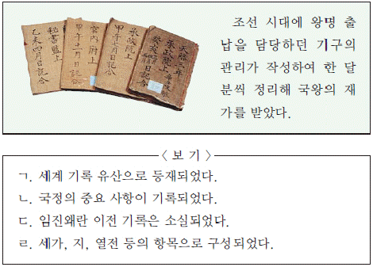
- ㄱ, ㄴ
- ㄱ, ㄹ
- ㄷ, ㄹ
- ㄱ, ㄴ, ㄷ
- ㄴ, ㄷ, ㄹ
(정답률: 35%)
24. (가), (나) 정치 세력에 대한 설명으로 옳은 것은? [2점]
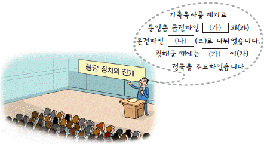
- (가) - 호란 이후 북벌 운동을 주도하였다.
- (가) - 인조반정 이후 서인 정권에 참여하였다.
- (나) - 주로 조식의 학문을 계승하였다.
- (나) - 기사환국으로 정권을 장악하였다.
- (가), (나) - 인물성동론과 인물성이론으로 대립하였다.
(정답률: 43%)
25. 다음 원칙이 발표된 시기를 연표에서 옳게 고른 것은? [2점]
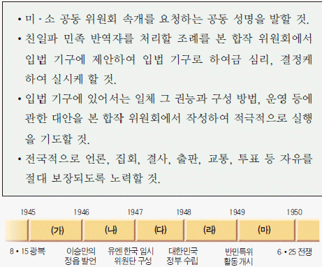
- (가)
- (나)
- (다)
- (라)
- (마)
(정답률: 40%)
26. (가), (나)를 주장한 인물에 대한 설명으로 옳지 않은 것은? [2점]
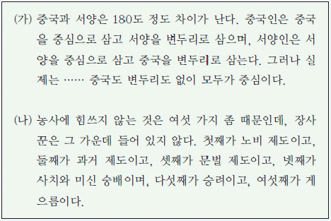
- (가) - 전통적인 화이관에서 벗어날 것을 역설하였다.
- (가) - 청의 문물을 적극적으로 수용할 것을 주장하였다.
- (나) - 신후담, 안정복 등을 제자로 길러 학파를 형성하였다.
- (나) - 영업전의 매매를 법으로 금지하는 토지 개혁론을 주장하였다.
- (가), (나) - 화폐 유통에 비판적이어서 폐전론을 주장하였다.
(정답률: 44%)
27. 지도는 역대 지방 행정 구역을 나타낸 것이다. (가)∼(다)에 대한 설명으로 옳은 것을 <보기>에서 모두 고른 것은? [2점]
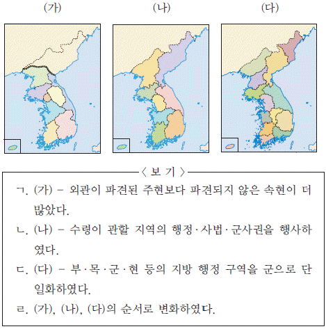
- ㄱ, ㄴ
- ㄱ, ㄷ
- ㄷ, ㄹ
- ㄱ, ㄴ, ㄹ
- ㄴ, ㄷ, ㄹ
(정답률: 43%)
28. 다음 자료의 사건이 일어난 시기의 사회 모습으로 옳은 것은? [2점]
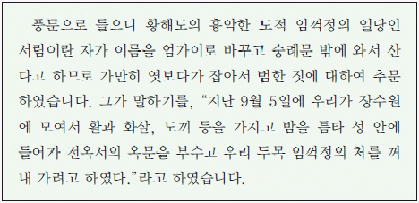
- 관청에 물품을 납부하는 공인이 등장하였다.
- 방납의 폐단으로 유망하는 농민이 더욱 증가하였다.
- 상공업의 발달로 상평통보가 전국적으로 유통되었다.
- 국가의 토지 지배권 강화를 위해 과전법이 단행되었다.
- 국가 재정을 보충하기 위해 공명첩과 납속책이 실시되었다.
(정답률: 59%)
29. 다음 질문에 옳은 답글을 작성한 사람을 모두 고른 것은? [2점]
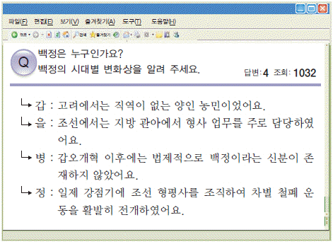
- 갑, 을
- 갑, 병
- 을, 정
- 갑, 병, 정
- 을, 병, 정
(정답률: 65%)
30. (가)~(마)에 들어갈 내용으로 적절하지 않은 것은? [3점]
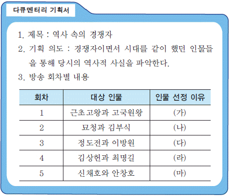
- (가) - 황해도 지역을 두고 대립하였다.
- (나) - 서경 천도를 둘러싸고 대결하였다.
- (다) - 국왕과 재상의 역할에 대해 의견이 달랐다.
- (라) - 청에 대한 외교 노선을 두고 논쟁을 벌였다.
- (마) - 대한인 국민회의 운영 주도권을 놓고 경쟁하였다.
(정답률: 45%)
31. 다음 명령이 내려진 배경으로 옳지 않은 것은? [1점]
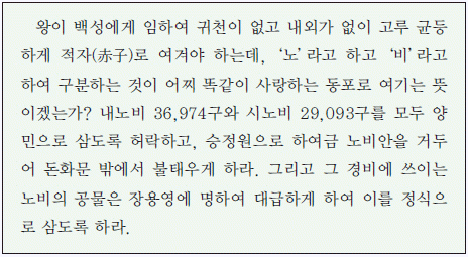
- 입역 노비를 납공 노비로 전환하는 경우가 많았다.
- 노비 신공(身貢)의 감액 조치가 여러 차례 내려졌다.
- 신분제의 동요로 역을 부담하는 양민의 수가 감소하였다.
- 도망과 합법적인 신분 상승으로 공노비안이 유명무실해졌다.
- 보충군(補充軍) 제도를 통한 노비들의 신분 상승 사례가 많아졌다.
(정답률: 21%)
32. 다음 법령이 발표된 시기의 경제 상황으로 옳은 것은? [2점]
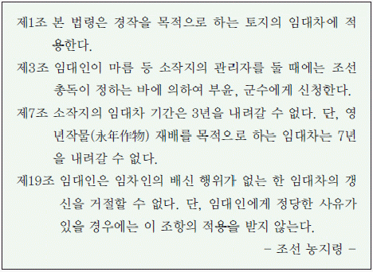
- 식량 관리법이 제정되어 식량 공출이 확대되었다.
- 공업 원료 증산을 위해 남면북양 정책이 실시되었다.
- 근대적 토지 소유제 확립을 명분으로 토지 조사 사업이 실시되었다.
- 총독의 허가를 받아 회사를 설립하도록 규정한 회사령이 철폐되었다.
- 호남선, 함경선 등이 건설되어 X자 형태의 간선 철도망이 구축되었다.
(정답률: 15%)
33. 사진 속 인물들이 소속된 군대에 대한 설명으로 옳은 것은? [3점]
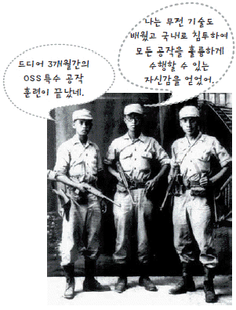
- 밀산부에서 조직되어 자유시로 이동하였다.
- 중국 호로군과 연합하여 항일전을 전개하였다.
- 백운평, 어랑촌, 고동하 전투에서 승리를 거두었다.
- 조선 독립 동맹의 군사 조직에 편입되어 활동하였다.
- 조선 의용대의 일부 병력을 통합하여 전력을 강화하였다.
(정답률: 49%)
34. 다음 신문에 대한 설명으로 옳은 것을 <보기>에서 고른것은? [2점]
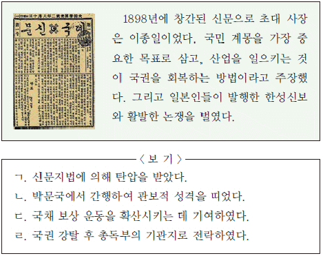
- ㄱ, ㄴ
- ㄱ, ㄷ
- ㄴ, ㄷ
- ㄴ, ㄹ
- ㄷ, ㄹ
(정답률: 38%)
35. 다음은 어느 외교관이 한 말이다. 밑줄 그은‘이 계획’이 실행된 직후의 정세로 옳은 것은? [3점]
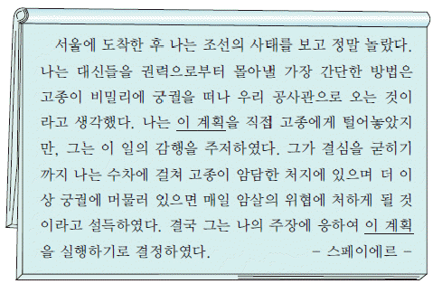
- 영국이 거문도를 불법 점령하였다.
- 프랑스가 경의철도 부설권을 허가받았다.
- 일본이 경복궁을 점령한 후 개혁을 요구하였다.
- 청이 한성과 의주를 연결하는 전신 가설권을 확보하였다.
- 미국은 고종의 특사인 헐버트의 면담 요구를 거절하였다.
(정답률: 24%)
36. 다음 만평에서 풍자하는 정세를 해결하기 위한 노력으로 옳지 않은 것은? [2점]
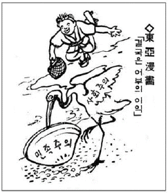
- 만주의 3부가 국민부와 혁신의회로 통합되었다.
- 신간회가 창립되어 국내외에 지회를 설치하였다.
- 동지의 단결을 목표로 대동 보국회가 조직되었다.
- 중국에서 한국 독립 유일당 북경 촉성회가 창립되었다.
- 조선 물산 장려회 등이 참여한 조선 민흥회가 출범하였다.
(정답률: 22%)
37. 다음은 근대에 추진된 개혁 내용이다. (가)~(라)를 시기순으로 옳게 나열한 것은? [1점]
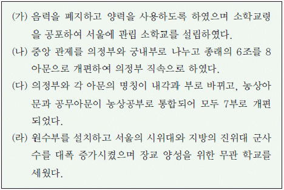
- (가) - (나) - (다) - (라)
- (나) - (가) - (라) - (다)
- (나) - (다) - (가) - (라)
- (다) - (가) - (라) - (나)
- (다) - (라) - (가) - (나)
(정답률: 52%)
38. 밑줄 그은‘그’의 활동으로 옳은 것을 <보기>에서 고른 것은? [2점]
- ㄱ, ㄴ
- ㄱ, ㄷ
- ㄴ, ㄷ
- ㄴ, ㄹ
- ㄷ, ㄹ
(정답률: 43%)
39. 다음 답사 계획서의 (ㄱ)~ (ㅁ) 중 적절하지 않은 것은? [1점]
- (ㄱ)
- (ㄴ)
- (ㄷ)
- (ㄹ)
- (ㅁ)
(정답률: 29%)
40. 표는 어느 단체의 회의 내용을 정리한 것이다. 이 단체에 대한 설명으로 옳은 것을 보기에서 고른 것은? [2점]
- ㄱ, ㄴ
- ㄱ, ㄷ
- ㄴ, ㄷ
- ㄴ, ㄹ
- ㄷ, ㄹ
(정답률: 29%)
41. 다음 (ㄱ)`~`(ㅁ) 도안의 소재에 대한 설명으로 옳지 않은 것은? [3점]
- (ㄱ) - 왕실 조상의 덕을 기리기 위해 지었다.
- (ㄴ) - 용상 뒤에 놓여 왕권을 상징하였다.
- (ㄷ) - 석실 대신 회격을 사용한 광릉에 묻혔다.
- (ㄹ) - 자명종의 원리를 이용하여 만든 혼천시계의 일부이다.
- (ㅁ) - 고구려의 천문도를 바탕으로 조선 시대에 다시 그려졌다.
(정답률: 31%)
42. 밑줄 그은‘이 인물’에 대한 설명으로 옳은 것은? [2점]
- 항일 무력 단체인 한인 애국단을 결성하였다.
- 광복군 창설에 참여하여 광복군 사령관을 지냈다.
- 국민 대표 회의 예비 회의의 임시 의장직을 맡았다.
- 대한민국 임시 정부의 초대 국무총리로 추대되었다.
- 신한 청년당의 대표로 파리 강화 회의에 참가하였다.
(정답률: 33%)
43. 그림의 대화를 통해 알 수 있는 경제 정책에 대한 설명으로 옳은 것은? [2점]
- 경자유전의 원칙 하에 시행되었다.
- 양전 사업을 통해 지계를 발급하였다.
- 관개 시설 및 산림도 대상으로 삼았다.
- 각 호당 소유지를 최대 5정보로 제한하였다.
- 실시 후 한 달 만에 토지 몰수가 완료되었다.
(정답률: 26%)
44. 다음 기사가 보도된 시기의 경제 상황으로 옳은 것은? [2점]
- 제2차 석유 파동으로 경제 위기를 맞았다.
- 3저 호황으로 물가가 안정되고 수출이 늘었다.
- 원조 물자를 가공하는 삼백 산업이 발달하였다.
- 경부 고속 국도를 개통하여 사회 간접 자본을 확충하였다.
- 국제 통화 기금의 금융 지원을 받아 국가 부도를 면하였다
(정답률: 31%)
45. 다음 소책자에서 소개하는 지역에 대한 역사적 사실로 옳은 것은? [2점]
- 고려의 대표적 무역항으로 아라비아 상인들도 왕래하였다.
- 임진왜란 때 왜적의 침입을 피해 국왕이 피난한 곳이었다.
- 조선 후기에 개시 무역과 후시 무역이 활발히 이루어졌다.
- 주민과 관리들이 뜻을 모아 근대적 사립 학교를 설립하였다.
- 3·15 부정 선거를 규탄하는 시위가 선거 당일에 일어났다.
(정답률: 26%)
46. (가) 국가가 소장한 우리나라 문화유산으로 옳은 것을 <보기>에서 고른 것은? [3점]
- ㄱ, ㄴ
- ㄱ, ㄷ
- ㄴ, ㄷ
- ㄴ, ㄹ
- ㄷ, ㄹ
(정답률: 46%)
47. (가) 지역 역사에 대한 탐구 활동으로 적절하지 않은 것은? [2점]
- 이륭 양행의 활동 내용을 조사한다.
- 서전서숙이 설립된 지역을 알아본다.
- 러시아가 용암포 조차를 요구한 목적을 파악한다.
- 서희의 외교적 노력으로 확보한 영토를 찾아본다.
- 후금 침입에 대항하여 정봉수가 일으킨 의병의 규모를 추정한다.
(정답률: 31%)
48. 다음 지도가 처음 제작된 시기의 사실로 옳은 것은? [2점]
- 억울한 백성을 위해 신문고 제도를 두었다.
- 국학을 성균관으로 개칭하고 문묘를 설치하였다.
- 「고려국사」를 편찬하여 조선 건국의 정당성을 밝혔다.
- 여진족과 왜구에 대비하기 위해 비변사를 설치하였다.
- 유능한 인사를 재교육하는 초계문신 제도를 실시하였다.
(정답률: 41%)
49. 다음은 어느 회담을 반대하는 시위의 결의문이다. 이 회담에 대한 설명으로 옳지 않은 것은? [2점]
- 김종필·오히라 비밀 회담 이후 본격화되었다.
- 한국군의 전력 증강과 AID 차관 제공에 합의하였다.
- 일제 강점에 대한 사죄와 보상에 합의하지 못하였다.
- 한국 정부의 경제 개발 자금 확보 수단으로 이용되었다.
- 공산주의 세력 확대를 저지하려는 미국의 의지가 반영되었다.
(정답률: 21%)
50. (가)~(다) 제도에 대한 설명으로 옳지 않은 것은? [1점]
- (가) -「 곡례」,「 효경」등을기본적인시험과목으로삼았다.
- (나) - 제술과가 명경과보다 중요시되었다.
- (다) - 정기시는 3년에 한 번 시행되었다.
- (나), (다) - 향리의 자제는 문과에 응시할 수 없었다.
- (가), (나), (다)의 순서로 실시되었다.
(정답률: 44%)